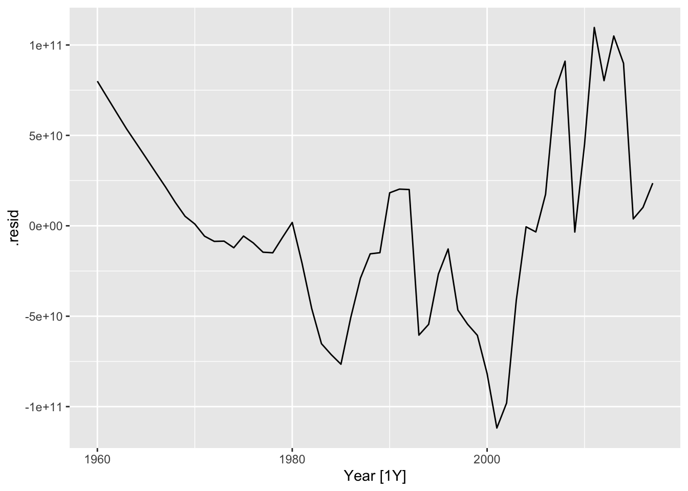

Chapter 22 Assignment: Project proposal
In this assignment you will develop your initial concept note into a draft of a full project proposal. Treat this assignment as a “dry run” for developing a proposal for a grant or fellowship application, or for your Ph.D. prospectus.
Your proposal should include at least the following sections and information.
Front matter: Descriptive title, your name, date, reference to “SYS 5581 Time Series & Forecasting, Spring 2021”.
Abstract: A very brief summary of the project.
22.1 Introduction
Give a narrative description of the problem you are addressing, and the methods you will use to address it. Provide context:
- What is the question you are attempting to answer?
- Why is this question important? (Who cares?)
- How will you go about attempting to answer this question?
This work addresses the question: Why do people not use probabilistic forecasts for decision-making?
22.2 The data and the data-generating process
Describe the data set you will be analyzing, and where it comes from, how it was generated and collected. Identify the source of the data. Give a narrative description of the data-generating process: this piece is critical.
Since these will be time series data: identify the frequency of the data series (e.g., hourly, monthly), and the period of record.
22.3 Exploratory data analysis
Provide a brief example of the data, showing how they are structured.
22.5 Perform and report the results of other exploratory data analysis
22.5.1 STL decomposition
vaelsales_tbl_ts %>%
model(STL(sales_GWh ~ trend(window=21) + season(window='periodic'), robust = TRUE)) %>%
components() %>%
autoplot()
vaelsales_tbl_ts %>%
mutate(ln_sales_GWh = log(sales_GWh)) %>%
model(STL(ln_sales_GWh ~ trend(window=21) + season(window='periodic'),
robust = TRUE)) %>%
components() %>%
autoplot()
vaelsales_tbl_ts %>% features(sales_GWh, feat_stl)## # A tibble: 1 × 9
## trend_strength seasonal_strength_… seasonal_peak_y… seasonal_trough… spikiness
## <dbl> <dbl> <dbl> <dbl> <dbl>
## 1 0.609 0.869 7 4 747395.
## # … with 4 more variables: linearity <dbl>, curvature <dbl>, stl_e_acf1 <dbl>,
## # stl_e_acf10 <dbl>vaelsales_tbl_ts %>% features(sales_GWh, feature_set(pkgs="feasts"))## # A tibble: 1 × 48
## trend_strength seasonal_strength_… seasonal_peak_y… seasonal_trough… spikiness
## <dbl> <dbl> <dbl> <dbl> <dbl>
## 1 0.609 0.869 7 4 747395.
## # … with 43 more variables: linearity <dbl>, curvature <dbl>, stl_e_acf1 <dbl>,
## # stl_e_acf10 <dbl>, acf1 <dbl>, acf10 <dbl>, diff1_acf1 <dbl>,
## # diff1_acf10 <dbl>, diff2_acf1 <dbl>, diff2_acf10 <dbl>, season_acf1 <dbl>,
## # pacf5 <dbl>, diff1_pacf5 <dbl>, diff2_pacf5 <dbl>, season_pacf <dbl>,
## # zero_run_mean <dbl>, nonzero_squared_cv <dbl>, zero_start_prop <dbl>,
## # zero_end_prop <dbl>, lambda_guerrero <dbl>, kpss_stat <dbl>,
## # kpss_pvalue <dbl>, pp_stat <dbl>, pp_pvalue <dbl>, ndiffs <int>, …22.5.2 Fitting data to simple models
global_economy %>% model(trend_model = TSLM(GDP ~ trend())) -> fit
fit## # A mable: 263 x 2
## # Key: Country [263]
## Country trend_model
## <fct> <model>
## 1 Afghanistan <TSLM>
## 2 Albania <TSLM>
## 3 Algeria <TSLM>
## 4 American Samoa <TSLM>
## 5 Andorra <TSLM>
## 6 Angola <TSLM>
## 7 Antigua and Barbuda <TSLM>
## 8 Arab World <TSLM>
## 9 Argentina <TSLM>
## 10 Armenia <TSLM>
## # … with 253 more rowsfit %>% filter(Country == "Sweden") %>% residuals()## # A tsibble: 58 x 4 [1Y]
## # Key: Country, .model [1]
## Country .model Year .resid
## <fct> <chr> <dbl> <dbl>
## 1 Sweden trend_model 1960 79973991821.
## 2 Sweden trend_model 1961 71110300270.
## 3 Sweden trend_model 1962 62306636078.
## 4 Sweden trend_model 1963 53581309752.
## 5 Sweden trend_model 1964 45596438566.
## 6 Sweden trend_model 1965 37551535271.
## 7 Sweden trend_model 1966 29425266377.
## 8 Sweden trend_model 1967 21418661066.
## 9 Sweden trend_model 1968 12930653974.
## 10 Sweden trend_model 1969 5268492989.
## # … with 48 more rowsfit %>% filter(Country == "Sweden") %>% residuals() %>% autoplot(.resid)
22.5.3 Work with ln(GDP)
global_economy %>%
filter(Country=="Sweden") %>%
autoplot(log(GDP)) +
ggtitle("ln(GDP) for Sweden") + ylab("$US billions")
global_economy %>%
model(trend_model = TSLM(log(GDP) ~ trend())) -> logfitlogfit %>% filter(Country == "Sweden") %>% residuals() %>% autoplot()
global_economy %>% model(trend_model = TSLM(log(GDP) ~ log(Population))) -> fit3
fit3 %>% filter(Country == "Sweden") %>% residuals() %>% autoplot()
22.6 Statistical model
22.6.1 Formal model of data-generating process
Write down an equation (or set of equations) that represent the data-generating process formally.
If applicable: describe any transformations of the data (e.g., differencing, taking logs) you need to make to get the data into a form (e.g., linear) ready for numerical analysis.
What kind of process is it? \(AR(p)\)? White noise with drift? Something else?
Write down an equation expressing each realization of the stochastic process \(y_t\) as a function of other observed data (which could include lagged values of \(y\)), unobserved parameters (\(\beta\)), and an error term (\(\varepsilon_t\)). Ex:
\[y = X\cdot\beta + \varepsilon\] Add a model of the error process. Ex: \(\varepsilon \sim N(0, \sigma^2 I_T)\).
22.7 Plan for data analysis
Describe what information you wish to extract from the data. Do you wish to… estimate the values of the unobserved model parameters? create a tool for forecasting? estimate the exceedance probabilities for future realizations of \(y_t\)?
Describe your plan for getting this information. OLS regression? Some other statistical technique?
If you can: describe briefly which computational tools you will use (e.g., R), and which packages you expect to draw on.
22.8 Submission requirements
Prepare your proposal using Markdown . (You may find it useful to generate your Markdown file from some other tool, e.g. R Markdown in R Studio.) Submit your proposal by pushing it to your repo within the course organization on Github. When your proposal is ready, notify the instructor by also creating a submission for this assignment on Collab. Please also upload a PDF version of your proposal to Collab as part of your submission.
22.9 Comment
Depending on your prior experience, you may find this assignment challenging. Treat this assignment as an opportunity to make progress on your own research program. Make your proposal as complete as you can. But note that this assignment is merely the First Draft. You will have more opportunity to refine your work over the next two months, in consultation with the instructor, your advisor, and your classmates.